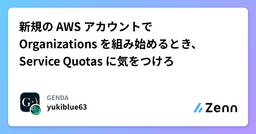

GENDAのフィード
https://zenn.dev/p/genda_jp
『世界中の人々の人生をより楽しく』をAspiration（大志）に掲げたエンターテイメント企業『GENDA』（ジェンダ）
フィード

新規の AWS アカウントで Organizations を組み始めるとき、Service Quotas に気をつけろ
GENDAのフィード
今回は、新規に作った AWS アカウントを Organizations の管理アカウントとし、メンバーアカウントを増やしていくときに遭遇したケースについて、知見をまとめます。 TL;DR新規 Organization は Maximum number of accounts がデフォルト（10）より低い値で始まることがある引っかかっても自分では緩和できない。AWS サポートへクォータの緩和申請を行う申請から反映まで、実測で約 2 週間かかった。最低でも 2 週間は見込んでおく待っている間も、クォータに依存しない作業は並行して進められる2026-08-03 以降は Serv...
3日前

DroidKaigi 2026 参加レポート
GENDAのフィード
先日、2026年9月1〜3日に開催されたDroidKaigi 2026に、GENDAのエンジニアが参加しました。https://2026.droidkaigi.jp/DroidKaigiはエンジニアが主役のAndroidカンファレンスで、今年も3日間にわたって開催されました。本記事では現地参加したメンバーのレポートをお送りします。 参加レポート当日参加したメンバーの感想と印象に残ったセッションをピックアップしてお届けします。弊社では勉強会やカンファレンスへの参加を推奨しており、今回も業務として参加しました。 圓谷昨年に続き今年も参加しました。昨年のセッションで得た知見...
4日前

Flutter ライブラリの SDK 制約と利用アプリのバージョンの関係を整理する
GENDAのフィード
背景: ライブラリの Flutter を上げられないと思い込んでいた社内向けにプライベート公開している Flutter ライブラリがあります。Git 依存で各アプリから参照する構成です。コード生成パッケージや解析環境を更新するために Flutter を新しくしたかったのですが、次のように考えていました。ライブラリの Flutter バージョンは、利用している各アプリの Flutter バージョンを超えてはいけないここで混同していたのは、開発に使う Flutter と、利用側に要求する SDK 下限です。この 2 つを分けると、利用アプリの更新を待たずに開発環境を更新できま...
5日前

private な GitHub Pages に独自ドメインを当てるときに気をつけること 2
2
GENDAのフィード
社内では GitHub Enterprise Cloud を使っていて、いくつかの社内向けサイトを GitHub Pages の private 公開でホスティングしています。リポジトリを読める人だけが見られる静的サイトを、サーバーも認証基盤も立てずに配信できる構成です。そのうちの 1 つに独自ドメインを設定しようとしたところ、TLS 証明書がいつまでも発行されませんでした。DNS も CAA もプロキシ設定も正しく、GitHub の API はエラーを 1 つも返しません。ただ何も起きません。原因は CNAME の向き先でした。private にした Pages には random...
6日前

Product Engineering Conference 2026 登壇・参加レポート
GENDAのフィード
先日、2026年9月5日に開催されたProduct Engineering Conference 2026にエンジニアの西尾が登壇しました。https://product-engineering.jp/2026/本記事では、西尾の登壇レポートと、現地参加したメンバーの参加レポートをお送りします。 登壇レポートエンジニアの西尾による登壇の様子をご紹介します。 「クロスボーダーM&AのValue Upを支えるプロダクト開発。日米チームのハブになったプロダクトエンジニアの実践」西尾健人https://fortee.jp/pdeconf-2026/proposal/6...
9日前
数値と対話で見直し続ける生成AIツールの運用設計
GENDAのフィード
こんにちは、Platform Engineering部 Engineering Officeの梅谷です。2026年7月に開催された AI DevEx Conference 2026 のポスターセッションで、GENDAが取り組んでいる生成AIツール運用について、「FinOps for AIの考え方で整える生成AIツール運用と活用拡大―可視化・対話・最適化・運用による再現性ある仕組み作り」というタイトルで発表しました。https://zenn.dev/genda_jp/articles/ea1bbe9d18c4beそこでは、生成AIの利用状況を可視化し、利用者との対話を経て、ツールや...
10日前
【情シスのSkill】ドメインを渡すだけでメール基盤/SPF/DKIM/DMARCを棚卸しするSkill
GENDAのフィード
【情シスのSkill】ドメインを渡すだけでメール基盤/SPF/DKIM/DMARCを棚卸しするSkill はじめに皆さんこんにちは！株式会社GENDA IT戦略部所属CorpEngのアサノです！この記事は、前回の「【情シスのSkill】ClaudeでSaaSセキュリティ評価チェックSkillを作ってみた」に引き続き【情シスのSkill】シリーズ第3弾です。基本的な考え方は、前回のSaaSセキュリティ評価チェックSkillとまったく同じです。これまで情シスが勘やその場の判断で実施していた行為を、Skill化してブレをなくす。そして情シスの仕事には、まだまだ定型化でき...
12日前
MagicPod MCPサーバーとClaude Skillsで実現する、QA定型業務の標準化
GENDAのフィード
こんにちは、Platform Engineering部 QAの池上です。GENDAではMagicPodを使ったE2Eテスト自動化を複数のプロダクトで運用しています。私はその中で、バッチ実行の結果確認やテスト環境の整備といったテスト自動化関連の業務を主に担当しています。GENDAでは自動テストのツールとしてMagicPodを採用しています。GENDAはM&Aによって取り扱うプロダクトの種類・数が時間とともに増えていく組織で、QA以外の職種のメンバーも含めて誰でも自動テストを実装できる体制を作りたいという狙いがありました。そのため、ノーコードツールであること、また社内で使われている...
16日前
そのDatabricksダッシュボード、誰の権限で誰に見えていますか
GENDAのフィード
株式会社GENDAでデータマネジメント部の部長をしております、さっくです。データ基盤の民主化が進み、ダッシュボードを作る人が増えました。困ったのは、顧客データのような取り扱いに気を使うデータを含むダッシュボードを、作った人の裁量で好きな範囲に公開できる状態になっていたことです。そして「誰が・何を・どこまで広く公開しているか」を横断で見る手段がありませんでした。1つずつ開いて目視すればいい話ではあるのですが、うちはDatabricksをグループ企業ごとにワークスペースを分けて運用していて、10個以上あります。ダッシュボードは、使われていないものも含めると500以上。目視で回りきれる規模...
18日前
iOSDC Japan 2026 シルバースポンサー実施・登壇・パンフレット記事寄稿のお知らせ
GENDAのフィード
2026年9月11日〜13日に開催されるiOSDC Japan 2026にて、GENDAはシルバースポンサーとして協賛します。あわせてエンジニア1名が登壇し、1名がパンフレット記事を寄稿します。https://iosdc.jp/2026/GENDAはiOSDC Japanには2023年から継続してスポンサーを実施しています。今年もシルバースポンサーとして協賛し、GENDAからは1名のエンジニアが登壇、さらに1名がパンフレット記事を寄稿いたします。本記事では、その内容をお伝えします。なお、本記事にはiOSDC Japan 2026の会場で開催される「iOSDCチャレンジ」のトークンも...
19日前
Raycast で Android Studio ⇄ Xcode を同じ行のまま切り替える
GENDAのフィード
はじめに生成 AI の登場により、担当領域を越えて開発に挑戦しやすくなってきました。もともと Android メインのエンジニアでしたが、最近は iOS 側のコードを書くことも増えています。iOS 開発と言えば Xcode が定番ですが、Android Studio に Kotlin Multiplatform プラグインを入れておくと、意外にも iOS プロジェクトを開くことができ、コード補完やコードジャンプ、ビルドして実行などをすることが可能です。普段使い慣れた IDE のまま作業できるため、Android エンジニアにとっては入りやすい環境だと感じています。ただし、Swi...
20日前
安価に運用できるVRPソルバーをAWSで構築する
GENDAのフィード
こんにちは、GENDAでデータサイエンティストをしている小貝です。最近ひょんなことから2歳の娘が戦隊ヒーローにハマっており、図鑑を買ってあげたらいつもベッドに持ち込んで寝ています。朝起きたら「デカレンジャーをトントンして寝かせてあげてたの」と報告してくれます。さて、業務で配送計画問題（Vehicle Routing Problem, VRP）を調べる機会がありました。VRPを扱うには有償のAPIを使うのが手軽なのですが、安価にできないか気になったのでAWSで試してみました。なお、具体的なコードを書くと長くなるためシステム構成を中心に書きます。 TL;DRVRPをOSSだけで解く...
24日前
インフラのモニタリングをAIと伴走する
GENDAのフィード
見きれないDatadogのモニタリングをDevinに任せて、毎朝Slackにレポートしてもらう株式会社GENDAのエンジニアのジャンボです。新しく事業に参画して、まるっとシステムを見ることになったとき、インフラやモニタリングしているメトリクスに関心を持ちたいのに、なかなか時間が取れないことってありますよね。今関わっているプロダクトではDatadogを使っていて、さまざまなメトリクスを可視化したり、できる限りのAlert/Monitorの設定もしているんですが、より理解を深めリスクに備えるためにAI（Devin）を使うことにしました。定期的にAI（今回はDevin）にDatado...
24日前
Secrets Managerのシークレットはどんな粒度で分けるべき？
GENDAのフィード
はじめにSecrets Managerでは、1つのシークレットの中でJSON形式を用いて複数のKey-Valueが登録できます。どんな粒度で分けるべきか疑問に思い調べたところ、意外と情報が見つからなかったので書いてみました。 公式ドキュメントを探索してみる ベストプラクティスは？ベストプラクティスのページを見ても、分け方の粒度について明示的な案内はありません。ただし、このページではいくつかのヒントを得ることができます。https://docs.aws.amazon.com/secretsmanager/latest/userguide/best-practices....
24日前
AI エージェントの UI 実装を確認を Maestro に確認させる
GENDAのフィード
TL;DRClaude Code が実装した UI の動作確認を、screencap の目視確認から Maestro のフロー実行に置き換えた同一の検証フローが中央値 70秒から 28秒前後になり、assertVisible による厳密な検証も手に入ったMaestro MCP には長時間セッションでデバイス接続が無効になる既知の不具合があるため、エージェントには CLI (maestro test) を使わせるのがおすすめ はじめに - screencap 目視確認の限界Claude Code のような AI コーディングエージェントに UI を実装させると、動作確認...
1ヶ月前
M&A後のプロダクトにQAはどう伴走するか ─ カラオケBanBanへのQA導入から自動化までの2年間
GENDAのフィード
こんにちは、Platform Engineering部 QA マネージャーの安藤です。私たちGENDAは「2040年、世界一のエンタメ企業へ」を「Vision/野望」に掲げ、その実現に向け、連続的なM&Aを成長の軸の一つとしています。それに伴い、GENDAには急速な事業拡大に加え、プロダクト数も多く、その事業内容も多岐にわたるという特徴があります。そのため、GENDAにおけるプロダクトの品質保証を担う私たちは、インプロセスQAではなく、横断的にプロダクト開発に伴走するPlatform Engineering部の一員としてQAチームを組成し、品質改善活動を行っています。本記事...
1ヶ月前
設定1つでDatabricksの課金を半分にした話
GENDAのフィード
BIツールの接続先をSnowflakeからDatabricksへ移行したところ、移行後の月額コストが事前の見積もりの約4倍になりました。ウェアハウスは最小サイズで、クエリの量も移行前とほぼ変わっていないのに、です。この記事は、その原因を課金データを分解しながら特定し、最終的に設定1箇所の変更で解消の目処を立てるまでの調査ログです。読み終わる頃には、サーバレスDWHの請求が「単価×クエリ量」だけでは説明できない理由と、同じ問題が自分の環境で起きていないかの確かめ方がわかるはずです。 何が起きたかBIツールのデータソースをSnowflakeからDatabricksへ移行しました。ウェ...
1ヶ月前
なぜAWS BlocksのAgentはAgentCoreではないのか？リポジトリから見えたその先
GENDAのフィード
2026年6月にAWS Blocksがパブリックプレビューとして登場してから、微力ながらOSSへのコントリビュートを継続しています。https://github.com/aws-devtools-labs/aws-blocks以前の記事では、AWS BlocksがAmplifyやApp Studioと何が違うのかを整理しました。https://zenn.dev/genda_jp/articles/8122f1cd49754cそこでAgent Blockについても触れたのですが、あらためてAgent周辺を見ていて、一つ気になったことがありました。「AWS BlocksのAgent...
1ヶ月前
マルチアカウント統制の実践―スケールする組織のAWS環境のガバナンス標準化
GENDAのフィード
こんにちは、Platform Engineering部 SRE/インフラ マネージャーの布田です。本記事では、M&Aを成長戦略の柱の一つとしているGENDAにおいて、AWS管理者である私たちのチームがM&A時に何をしているのかをお伝えします。元々は他社が管理していたAWS環境をグループに移管する際に、私たちが実際にやっていることを六つのフェーズに分けて紹介します。マルチアカウント統制に向き合っている方の参考になれば幸いです。なお、M&Aで受け入れるシステム環境は都度異なり、AWS以外のクラウドやオンプレミス環境が対象となる場合もあります。今回は、そのなかでも多...
1ヶ月前
dbtのCI/CDとLakeflow Jobsによる定期実行のDABs管理
GENDAのフィード
こんにちは、データマネジメント部でデータエンジニアをしています。山城です。今回はデータチームで管理しているdbtのCI/CDや、定期実行用Lakeflow Jobsについて実際に行っている下記の取り組みについてまとめます。GENDAの場合だと、複数の事業・グループ企業があるため、それぞれの管理や環境を分ける部分に注力して作成しました。dbtのCI/CDdbtの定期実行用Lakeflow JobsのDeclarative Automation Bundles (DABs) によるIaC化Lakeflow JobsのCD 前提簡単に取り組み前の状態についてまとめます。Gi...
2ヶ月前